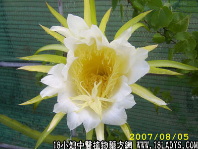

别名：七里剑花、天尺花、韦陀花、量天尺花。
植物名：量天尺。
生长环境：本品是多年生扳援植物，扳援于墙上或树上、庭园中，亦闻有栽培。耐旱力强，过于潮湿则易于腐烂。
分布：原产巴西，广州附近村落中常见。
入药部分：花。
采集期：夏、秋。
自采地点：家种。
性味：性微寒、味甘。
功能：清肺热、止咳嗽。
主治、用量和用法：1、肺燥咳；2、咳血；3、痄腮；4、痰火核，以上干用本品5钱至1两，猪瘦肉适量，清水煎约三至四小时服食。
参考资料：《临床实用中药》功效：1、清热润肺，治痰热肺燥咳嗽，可和猪肉煲食。2、治心气痛，煲猪肉食。
本文解释权归中药大全，本文地址：https://www.daquan.com/post/1603.html